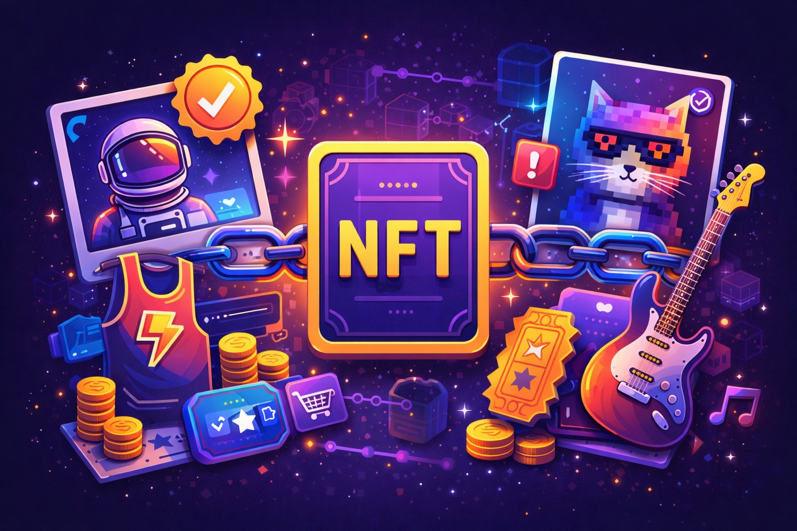

Τα NFT (Non-Fungible Tokens) είναι μοναδικά ψηφιακά tokens που αποδεικνύουν ιδιοκτησία και αυθεντικότητα για ένα συγκεκριμένο ψηφιακό αντικείμενο (τέχνη, συλλεκτικά, μουσική, in-game items κ.λπ.). Σε αντίθεση με τα κρυπτονομίσματα, κάθε NFT είναι διαφορετικό και δεν ανταλλάσσεται 1:1 με κάποιο άλλο.

Η ταχύτητα αγοράς/πώλησης ή minting ενός NFT εξαρτάται από το blockchain (π.χ. Ethereum, Solana, Polygon). Συνήθως ολοκληρώνεται σε δευτερόλεπτα έως λίγα λεπτά, ανάλογα με το δίκτυο και τη συμφόρηση.
Τα fees στα NFT είναι κυρίως gas fees για ενέργειες όπως mint, listing, buying ή transferring. Σε marketplaces μπορεί επίσης να υπάρχει προμήθεια πλατφόρμας και royalties προς τον δημιουργό (όπου εφαρμόζεται).
Τα NFT βασίζονται σε τεχνολογίες που επιτρέπουν μοναδικότητα και “ιδιοκτησία” on-chain:
Πολλοί βλέπουν τα NFT να εξελίσσονται από “εικόνες συλλογών” σε εργαλεία χρησιμότητας: ψηφιακή ταυτότητα, memberships, in-game ιδιοκτησία, tickets, πιστοποιήσεις και brand εμπειρίες. Η αξία τείνει να στηρίζεται περισσότερο στη χρησιμότητα και λιγότερο στο hype.
Τα NFT είναι μοναδικά ψηφιακά assets που αποδεικνύουν ιδιοκτησία και μπορούν να δώσουν πραγματική χρησιμότητα. Για ασφάλεια, πάντα έλεγχε το official link της συλλογής, το smart contract και μην υπογράφεις ύποπτες συναλλαγές.